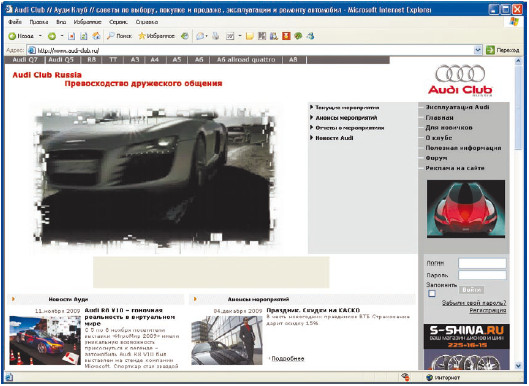

СТО: честные и нечестные
Если подходить к ремонту с точки зрения качества, то на специализированных автосервисах оно, конечно, выше. И дело не только в том, что в распоряжении мастеров имеется современное оборудование, – у некоторых гаражных специалистов оно не хуже, но если речь идет о фирменном автосервисе, то его мастера обычно обучаются ремонту конкретной марки автомобилей. Данный факт подтверждается наличием у СТО лицензии на выполнение ремонтно-диагностических работ.
Примечание
Оригинал и копия лицензии на выполнение ремонтно-диагностических работ какой-либо марки автомобилей должны не только иметься на СТО (в теории), но и предъявляться по просьбе клиента. Если вам только сказали, что подобная лицензия имеется, это еще ничего не значит, требуйте, чтобы ее показали. Если же находится множество причин, по которым лицензию предъявить нельзя, то выводы очевидны.
Следует учитывать, что сам факт наличия современного и дорогого оборудования на СТО означает лишь определенный финансовый статус его владельцев, но ничего не говорит о качестве ремонта. Этим оборудованием еще нужно уметь пользоваться. Фактически все зависит от конкретного мастера.
Совет
Прежде чем очаровываться оборудованием автосервиса, поинтересуйтесь соблюдением сроков поверки (калибровки) диагностических приборов. Подобная процедура должна проводиться регулярно, только это дает определенную гарантию исправности оборудования Если же вам говорят, что данные приборы работают уже несколько лет как часики и не нуждаются ни в какой калибровке, это серьезный повод усомниться в точности и качественности измерений. А от этого многое зависит и в диагностике, и в ремонте автомобиля.
Многие новоиспеченные владельцы автомобилей считают более привлекательными СТО, которые вывешивают эмблемы многих марок. Им кажется, что такие универсалы с легкостью найдут и устранят любую неисправность. Однако это означает лишь то, что, скорее всего, в данном автосервисе толком не умеют ремонтировать ни одну из заявленных марок, а уж лицензии на выполнение ремонтно-диагностических работ всех этих автомобилей (что является определенной гарантией качества) у них почти наверняка нет.
Настораживать должны те СТО и сервисные центры, где вместо четкой цифры, обозначающей стоимость предстоящих работ, предлагают договориться по факту выполнения этих работ («Вы же понимаете, никогда нельзя заранее предсказать, что еще вылезет в процессе ремонта!»). Это верный признак того, что здесь вас держат за «чайника» (а вернее, за «дойную корову») и намерены облегчить ваш карман на сумму, многократно превышающую реальную стоимость ремонта. На любой СТО есть четкий прайс на те или иные виды работ; а что касается невозможности предсказаний, то именно для этого и нужна диагностика.
Есть нюанс, на который покупаются иногда даже не новички за рулем: требование сдать технический паспорт на автомобиль на время проведения ремонтных работ. Автору ни разу не пришлось услышать внятного обоснования, зачем это требуется делать (кроме разве что того, что таким образом у посторонних людей появляется возможность прокатиться на чужом автомобиле), зато довелось увидеть немало несчастных автовладельцев, у которых автомобиль угнали буквально на следующий день после посещения такой СТО из гаража, а то и прямо с СТО, пока владелец рассчитывался за проведенные работы (при этом он уже принял автомобиль, то есть СТО не несла ответственность за его сохранность!). Так что как только прозвучало настойчивое требование отдать техпаспорт на автомобиль, лучше данный автосервис покинуть и больше в него не возвращаться.
Перед тем как отправиться в автосервис, не поленитесь зайти в Интернет и ознакомиться с содержимым так называемых «черных» списков СТО и сервисных центров. Найти такие сайты несложно, для этого достаточно набрать в поисковике запрос «черный список СТО» либо что-то в этом роде. Эти списки формируются на основании информации, которая поступает от автолюбителей, пострадавших от некачественного автосервиса либо обманутых на СТО (в сервисном центре). «Черные» списки обычно включают в себя не только перечень СТО и сервисных центров, отличающихся некачественной работой или замеченных в мошенничестве, но и подробное описание причин, по которым та или иная организация попала в этот список. Кстати, в Интернете ведутся и «белые» списки, в которых автолюбители делятся адресами и названиями порядочных СТО.
В Интернете же можно найти и сайты любителей именно вашей марки автомобиля, на которых опытные автовладельцы охотно дадут совет, куда обратиться по поводу ремонта, где именно в вашем городе можно приобрести качественные и недорогие детали, объяснят нюансы эксплуатационного обслуживания конкретной модели автомобиля и даже смогут ориентировочно оценить стоимость необходимого ремонта (рис. 3.7).

Рис. 3.7. Интернет-страница клуба любителей Audi
Рекомендуется выполнять ремонт и техническое обслуживание автомобиля все время на какой-нибудь одной СТО. Во-первых, отношение к постоянным клиентам намного лучше, чем ко всем остальным, следовательно, вы вполне можете рассчитывать на высокое качество выполненных работ. Во-вторых, на некоторых СТО постоянным клиентам могут даже предоставлять небольшие дисконтные скидки.
Примечание
В хорошем автосервисе мастер или механик всегда осматривает поступивший автомобиль в присутствии его владельца. Хозяину рассказывается о текущем состоянии машины, обращается его внимание на наиболее слабые места. При этом специалист объясняет, какие работы необходимо сделать как можно быстрее, а с какими можно какое-то время подождать. Затем клиент самостоятельно выбирает те работы и услуги, которые он считает нужным выполнить, принимая во внимание, разумеется, свои финансовые возможности.